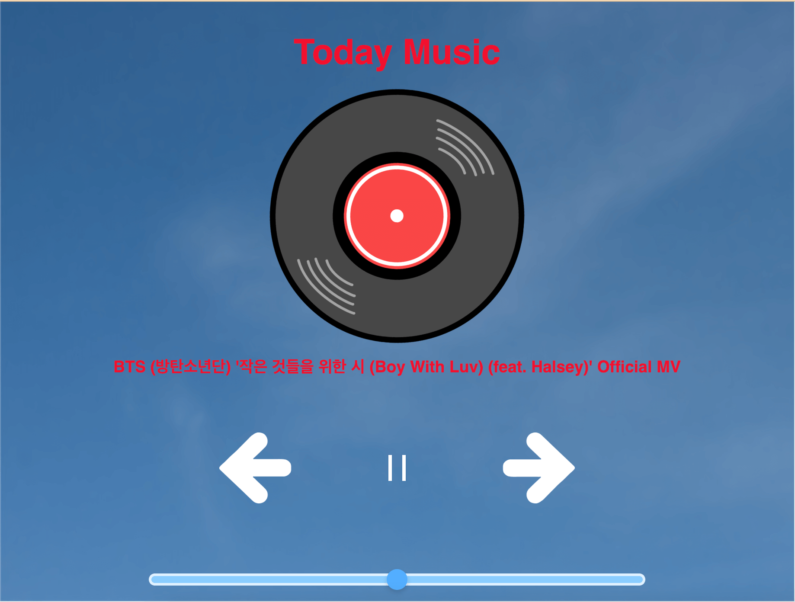

制作意図
「気象庁が出しているお天気APIを使用したアプリ」という課題で制作したものです。
私は音楽を聞くのが好きなので、天気と音楽を組み合わせたアプリを制作しようと思いました。そこで同時に学習していたyoutubeDataAPIを組み合わせて「天気に応じて音楽が変わる」というアプリを制作しました。
使用方法
お天気に応じて自動的に音楽が変わる。
今日の天気に応じて曲が変わります。天気ごとに背景が変わるので、ひと目で今日の天気がわかるのも特徴です。
ボタン説明
真ん中の再生ボタンで再生の切り替えをします。曲が流れるとレコードが回転するので視覚的にも再生されているのがわかりやすくなっています。

左右の切り替えボタンで曲を切り替えることができます。
制作手順
アイデア出し
まずは、どの情報を使用するのかと簡単なUIを考えました。メインは曲が流れることですが、天気を使用していることをわかりやすくするためにレコードの色と背景を作成しました。
デザイン決め
実際にある音楽アプリの配置を参考にして極力機能を減らしました。
晴れ、雨、曇の色はそれぞれのぽい色を使用しました。
コーディング
使用したツールはVisual Studio Codeです。
youtubeDataAPIとyoutubeIframeAPIとお天気APIを使用して制作しました。
純粋なJavaScriptを使用しました。
工夫点
今回の作品で私が工夫した点は、2つのAPIの組み合わせです。
お天気APIを使用しているfetchの中でyoutubeDataAPIのfetchを使用しました。 その中で天気の分岐はifで分岐させてその都度youtubeDataAPIを取得しています。
制作を通して
今回は、APIを使用してアプリを制作しました。APIはオブジェクトの操作に似ているのでJavaScriptのオブジェクト操作についての理解度が少し上がった気がします。
今回は、お天気とyoutubeのAPIを使用しました。個人的にとても制作が楽しかったので他の面白そうなAPIを自主学習していこうと思います。